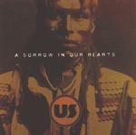

| Artist: | US |
| Title: | A Sorrow In Our Hearts |
| Label: | self produced |
| Length(s): | 60 minutes |
| Year(s) of release: | 2002 |
| Month of review: | [05/2002] |
| 1) | Rollercoaster | 9.05 |
| 2) | The Acid Dream | 11.58 |
| 3) | Dog | 10.22 |
| 4) | Forever Yours | 5.56 |
| 5) | A Sorrow In Our Hearts | 9.41 |
| 6) | Passport To Magonia | 12.38 |
The Acid Dream is a slow plodding piece with ethereal electric guitar. The rhythm section is off-beat with a bass bouncing on through, but the vocal part is a bit toneless, more like hasty story telling (not always well-fitting). The second part of the chorus, which is dreamy is much better. One of the other good parts in the song are when in the instrumental middle part the keyboards reign, and the part where the fast drum rolls and the song takes on an air of menace. It seems then that the song stops, but no, it continues this time with moodiness on acoustic guitar and string like synths again.
The third track is about men's best friend, Dog; sad eyes stare at you from the booklet. The acoustic guitar plays a dominating role on this lullabyish tune, which has a bit of an old Genesis feel. After three minutes or so we come to a merry part in the music, after which the guitar starts too rage. I did not care much for the merry part, but this guitar part is quite nice. I also do not really see a reason for including a merry, waltzy part such as this. Choices like these often give the music an air of arbitrarity.
Forever Yours is a dreamy acoustic ballad with keys repetitive in the back. Although the song will be called be trite and melodramatic by some, it does sound very honest and yes, at times, quite emotional. The instrumental closing part is a bit too longwinded and uneventful.
Quite a long stretch of lyrics we find on A Sorrow In Our Hearts. In view of the fact that the vocals are not that great (think of that other Dutch bands Differences here), they might do better focusing on the instrumental parts. The first part is rather friendly and uneventful acoustic music, having a sixties or seventies folk air. In the middle we get a nice drum section with a growling bass, rousing. The following (long) keyboards section is one in the best early Genesis tradition, with an Arabic tinge to it. Afterwards we return to the acoustic vocal part.
The final track Passport to Magonia is also the longest. It opens with Levin like meanderings on the bass. The bass presence is really strong here, also in the vocal part which is rather hectic and up-beat. Old Genesis and a bit of Yes are apparent here. The alternatingly sung lyrics are a bit awkward.
Notwithstanding a few typo's in the booklet, the lyrics are quite interesting, although sometimes I have the feeling that telling a story is more important to the band than having the lines fit to the music. It also seems they still have the tendency to write it all down, not leaving the interpretation to the listener. Good parts again are when the guitars roars and the drums drone and the majestic keyboards just before the ten minute keyboards. Like on most tracks, there are plenty of vocal harmonies and a number of different vocal melodies, some of them a bit trite. Instrumentally, the song has some really good moments and a very uplifting ending.